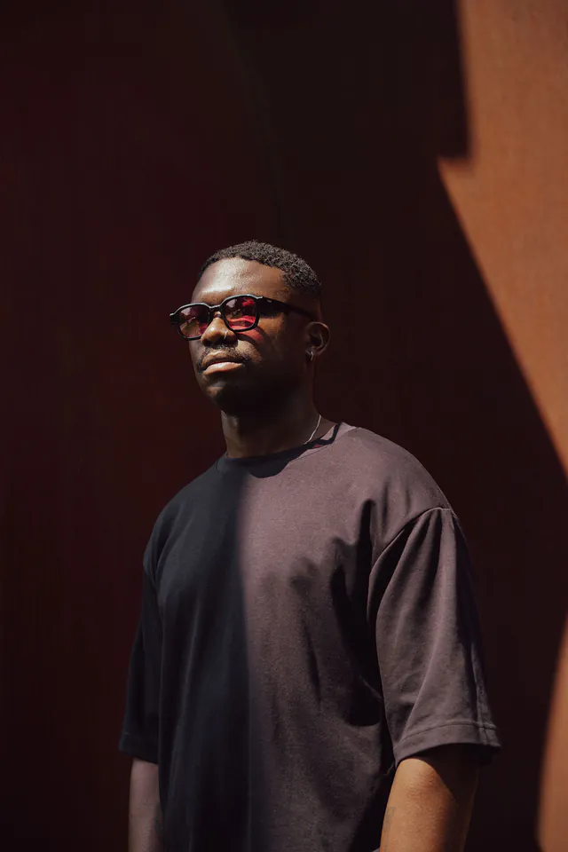

DJ in Augsburg
Renaissance-Flair, junges Uni-Publikum und eine Altstadt voller Geschichte — die Fuggerstadt feiert vielschichtig. Benji Holiday bringt den passenden Sound an die Decks, egal ob Hochzeit, Firmenfeier oder Semesterparty.
Resident-Erfahrung: Rote Sonne · Bob Beaman · Harry Klein

Ein DJ für die Fuggerstadt
Augsburg lebt von einem seltenen Kontrast: Auf der einen Seite die über 2000 Jahre alte Geschichte mit Rathausplatz, Renaissance-Fassaden und dem Erbe der Fugger — auf der anderen eine lebendige Universitätsstadt mit jungem, feierfreudigem Publikum. Genau in dieser Spannung fühlt sich Benji Holiday wohl. Rund 65 km westlich von München gelegen, ist die Stadt für ihn schnell erreichbar und musikalisch ein dankbares Terrain.
Für eine Hochzeit in einem der historischen Höfe der Altstadt braucht es feines Timing und Songs, die drei Generationen gleichzeitig auf die Tanzfläche holen. Eine Firmenfeier im Kongress am Park verlangt dagegen eine ganz andere Dramaturgie — Empfangssound, der Gespräche trägt, und eine Peak-Time, die den großen Saal füllt. Benji plant beide Welten im Vorgespräch durch, statt eine Standard-Playlist abzuspielen.
Von der Altstadt bis zum Kongresszentrum
Die Bandbreite der Augsburger Anlässe ist groß: Trauungen und Feiern in den Renaissance-Sälen, Sommerfeste und Weihnachtsfeiern der ansässigen Betriebe, Semesterpartys und private Geburtstage rund um das Univiertel. Für jede dieser Feiern legt Benji Musikauswahl, Lautstärke und Übergänge individuell fest — inklusive deiner Wunschsongs und einer klaren No-Go-Liste.
Faire, klare Preise
Detaillierte Aufschlüsselung auf der DJ-Übersicht.
DJ in Augsburg — gut zu wissen
Wie läuft die Anfahrt aus München nach Augsburg?
Augsburg liegt rund 65 km westlich von München, direkt an der A8. Die Anfahrt rechne ich mit 0,35 €/km ab München und weise sie vorab transparent im Gesamtangebot aus — keine Überraschungen am Abend.
Legst du auch in größeren Sälen wie dem Kongress am Park auf?
Ja. Für weitläufige Locations stimmen wir Anlage, Subwoofer und Licht vorab auf Raumgröße und Gästezahl ab, damit der Sound auch in großen Sälen sauber und druckvoll trägt.
Passt dein Sound zu einer Studentenfeier genauso wie zu einer klassischen Hochzeit?
Genau das ist Augsburgs Reiz. Ich lese das Publikum und wechsle souverän zwischen elegantem Empfang und ausgelassener Uni-Nacht — mit deinen Wunschsongs und einer No-Go-Liste, an die ich mich halte.